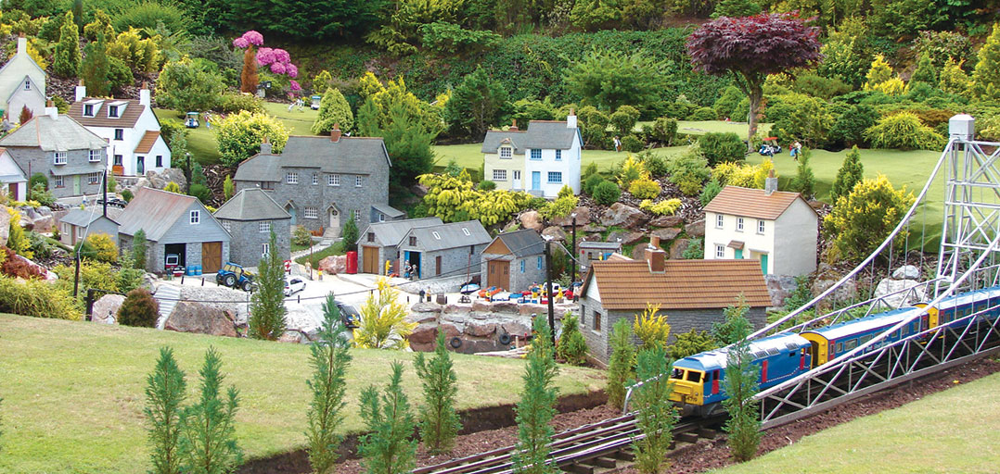

Local Attractions

Babbacombe Cliff Railway
It's well worth going down to Oddicombe beach, but it's quite a climb back up to Babbacombe. Try the Cliff Railway.
BABBACOMBE MODEL VILLAGE
A Visit To Babbacombe Is Not Complete Without A Visit To BABBACOMBE MODEL VILLAGE. The village is set on a hillside and is made to one twelfth scale throughout. It re-creates in perfect details the sights and sounds of the English village.
Best is to visit towards sunset as you can enjoy the wonderful garden setting in the light, and then see it illuminated by thousands of lights.
Torquay Museum and Torre Abbey
Just up the road from the harbour as you go towards Babbacombe, the Museum has six galleries including an Archaeological Gallery with exhibits including a fragment of the oldest human remains found in Britain. There's also an Agatha Christie exhibition with displays of photographs, newspaper cuttings, books and other memorabilia tracing her life and work.
The original Norman Abbey was destroyed by the order of Henry VIII, though some parts of the building escaped his attention. The present Abbey Mansion was built during the seventeenth and eighteenth centuries and is open all year. There are collections of paintings, silver and glass. In front are the Italian Gardens and a large ornamental pond, tennis courts and a putting green.